Module 04 · Phân biệt M trạng thái coherent
Từ Helstrom bound của QPSK đến máy thu lai và repeater cho qudit
- Tính Helstrom bound của M-PSK từ Gram matrix vòng
- Giải thích giới hạn lượng tử chuẩn (SQL) của máy thu heterodyne
- So sánh máy thu Kennedy, homodyne-Kennedy và displacement tối ưu
- Đọc kết quả thực nghiệm vượt SQL của Becerra
- Nối bài toán M trạng thái với kênh Gamma-Gamma của nhóm
📚 Tài liệu nguồn của module (đã xác minh bằng nội dung từng file)
| File trong kho | Bài báo (đã xác minh bằng nội dung) | Trang | Trạng thái | Liên kết | Đã dùng vào module |
|---|---|---|---|---|---|
| Experimental demonstration of a receiver beating the standard quantum limit for multiple nonorthogonal state discrimination.pdf | Experimental demonstration of a receiver beating the standard quantum limit for multiple nonorthogonal state discrimination F. E. Becerra, J. Fan, G. Baumgartner, J. Goldhar, J. T. Kosloski, A. Migdall · 2013 · Nature Photonics 7, 147 | 6 | Đã đọc, khớp tên bài | DOI | Đã đọc đủ; Fig. 1, 2, 4. |
| Müller_2012_New_J._Phys._14_083009.pdf | Quadrature phase shift keying coherent state discrimination via a hybrid receiver C. R. Müller, C. Wittmann, P. Marek, R. Filip, C. Marquardt, G. Leuchs, U. L. Andersen · 2012 · New J. Phys. 14, 083009 | 23 | Đã đọc, khớp tên bài | DOI | Đã đọc đủ; Eq. (1) đến (13), Fig. 1 đến 8. |
| 1708.09322v1.pdf | A hybrid quantum repeater for qudits M. Bergmann, P. van Loock · 2017 · arXiv:1708.09322 | 14 | Đã đọc, khớp tên bài | DOI · arXiv | Đã đọc đủ; Eq. (26), (47), (58), (76), Fig. 1 đến 4. |
Bài giảng (slide)
Dùng phím ← → hoặc nút bấm; nút ⛶ để trình chiếu toàn màn hình.
Bài toán phân biệt M trạng thái coherent PSK
- \(\bar n=|\alpha|^2\)số photon trung bình mỗi xung
- \(M\)số trạng thái; mang \(\log_2 M\) bit/ký hiệu
Müller và cộng sự dùng QPSK \(\alpha_n=|\alpha|e^{i(n-\frac12)\pi/2}\) với tiên nghiệm \(p=1/4\); BPSK là \(M=2\), QPSK là \(M=4\).
Nguồn: Müller et al., New J. Phys. 14, 083009 (2012), Eq. (1), tr. 4.
Chồng lấn và Gram matrix của bộ PSK
- QPSK kề nhau\(e^{-2\bar n}\)
- QPSK đối xứng\(e^{-4\bar n}\)
| \(\bar n\) | kề nhau \(e^{-2\bar n}\) | đối nhau \(e^{-4\bar n}\) |
|---|---|---|
| 0,5 | 0.3679 | 0.1353 |
| 1 | 0.1353 | 0.0183 |
| 2 | 0.0183 | 0.000335 |
Helstrom bound của QPSK
- \(\lambda_k\)trị riêng của Gram matrix (vòng)
- \(P_{\rm err}^{\rm H}=1-P_{\rm c}^{\rm H}\)xác suất lỗi tối thiểu của mọi phép đo
Tiệm cận nhiều photon: \(P^{\rm H}_{\rm err}\simeq\tfrac12e^{-2|\alpha|^2}\) khi \(|\alpha|^2\gg1\).
| \(\bar n\) | chính xác | \(\tfrac12e^{-2\bar n}\) |
|---|---|---|
| 3 | 1.2398e-3 | 1.2394e-3 |
| 5 | 2.2703e-5 | 2.2700e-5 |
| 8 | 5.6268e-8 | 5.6268e-8 |
Tiệm cận: Müller et al., New J. Phys. 14, 083009 (2012), tr. 4. Công thức trị riêng: bổ sung, đã kiểm bằng số (data/verify/m04_verify.py).
Standard quantum limit (giới hạn lượng tử chuẩn) của máy thu thông thường
- \(P_{\rm SQL}\)lỗi nhỏ nhất của máy thu thông thường hiệu suất 100%
- \(\tfrac12\mathrm{erfc}(\cdot)\)lỗi của một cầu phương đơn
Hai cầu phương độc lập đo cùng lúc (heterodyne, hay homodyne kép) nên xác suất đúng là tích hai xác suất đúng.
- \(r^2\)phần ánh sáng đi vào máy homodyne
Nguồn: Becerra et al., Nature Photon. 7, 147 (2013), Eq. (2), tr. 148; Müller et al., New J. Phys. 14, 083009 (2012), Eq. (4), tr. 5.
Trường hợp hai trạng thái làm chuẩn so sánh
| \(\bar n\) | homodyne | Helstrom | tỉ số |
|---|---|---|---|
| 0.1 | 0.2635 | 0.2129 | 1.24 |
| 0.5 | 0.0786 | 0.0351 | 2.24 |
| 1 | 0.0228 | 0.00460 | 4.95 |
| 2 | 2.34e-3 | 8.39e-5 | 27.9 |
Máy thu Kennedy vượt homodyne khi \(\bar n>0{,}4\); máy thu displacement tối ưu vượt với mọi \(\bar n\) (Müller 2012, tr. 6).
Khoảng cách Helstrom và SQL theo số photon
| \(\bar n\) | Helstrom QPSK | SQL | \(P_{\rm SQL}/P^{\rm H}\) |
|---|---|---|---|
| 0.5 | 0.2617 | 0.4220 | 1.61 |
| 1 | 0.0924 | 0.2921 | 3.16 |
| 2 | 9.55e-3 | 0.1511 | 15.8 |
| 5 | 2.27e-5 | 0.02519 | 1109 |
| 10 | 1.03e-9 | 1.565e-3 | 1.5e6 |
Hệ số bốn trong số mũ \(2\bar n\) so với \(\bar n/2\) là khoảng trống mà máy thu thích nghi và máy thu lai muốn thu hẹp.
Dòng thời gian bốn nhánh: lý thuyết, máy thu, thực nghiệm, repeater
Nét liền: phụ thuộc (kết quả được dùng trực tiếp). Nét đứt: ảnh hưởng ý tưởng. Năm và tác giả lấy từ danh mục tài liệu của ba bài báo; Kennedy (1972 hoặc 1973 tuỳ bài trích) không đặt lên trục.
Máy thu thích nghi dùng displacement và photon counting
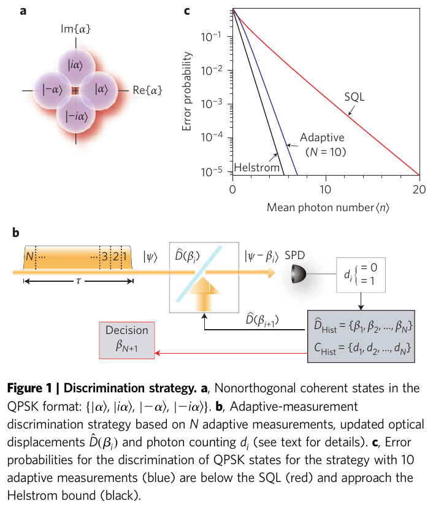
Nguồn: Becerra et al., Nature Photon. 7, 147 (2013), Fig. 1 (tr. 148)
- \(\beta_j\)giả thuyết được thử ở bước \(j\)
- \(d_j\)số photon đếm được
- \(A\)hệ số chuẩn hoá
Nếu \(\beta_j\) đúng, trường được dịch về chân không và \(d_j=0\) chắc chắn. Quyết định cuối là trạng thái có posterior lớn nhất sau \(N\) bước.
Hiện thực thực nghiệm của máy thu thích nghi
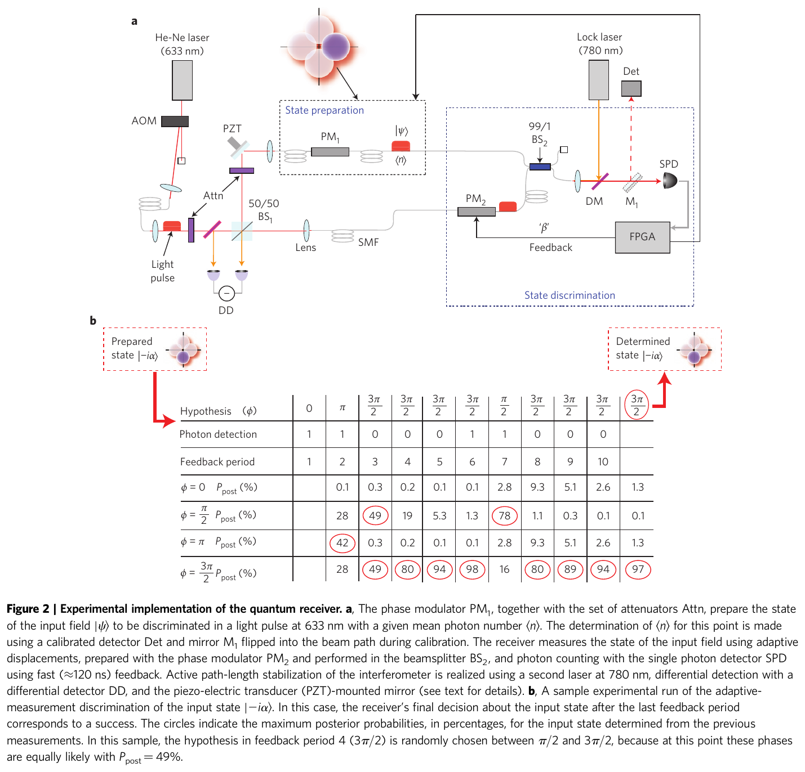
Nguồn: Becerra et al., Nature Photon. 7, 147 (2013), Fig. 2 (tr. 149)
- laser 633 nm, \(N=10\) chu kỳ \(\approx2.7\,\mu\)s, băng thông hồi tiếp 10 MHz
- độ thấy giao thoa \(V=99{,}7\%\); phát hiện đơn photon \(84{,}0\%\)
- mỗi điểm: \(4\times10^{6}\) lần thử
Kết quả: lỗi dưới SQL cho bốn trạng thái
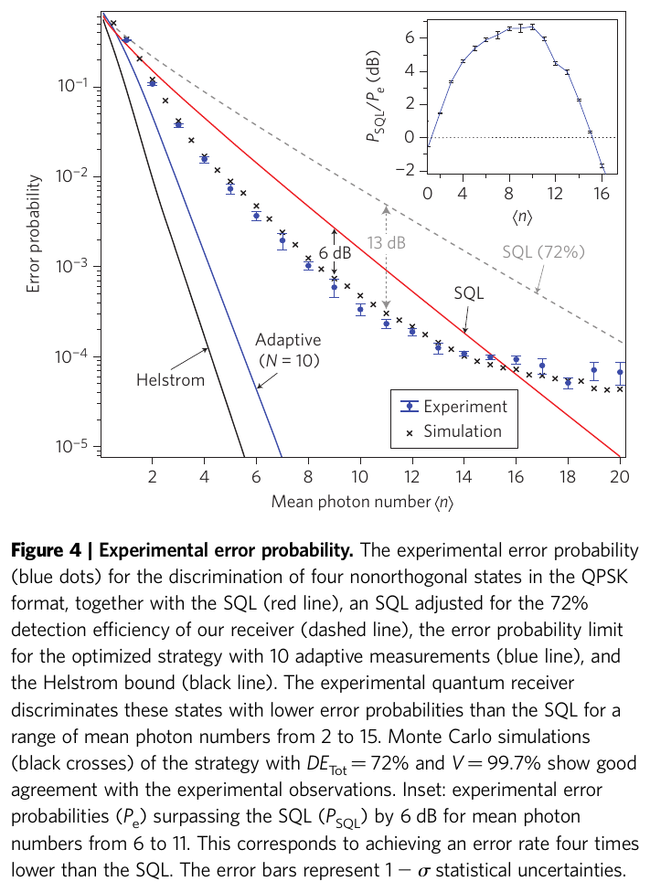
Nguồn: Becerra et al., Nature Photon. 7, 147 (2013), Fig. 4 (tr. 150)
- dưới SQL với \(2\le\bar n\le15\), không hiệu chỉnh hiệu suất
- hơn 6 dB với \(6\le\bar n\le11\): lỗi bằng khoảng một phần tư SQL
- đường cong cong lên khi \(\bar n\) lớn vì độ thấy dưới 100%
Máy thu lai: một phép đo liên tục rồi một phép đo rời rạc
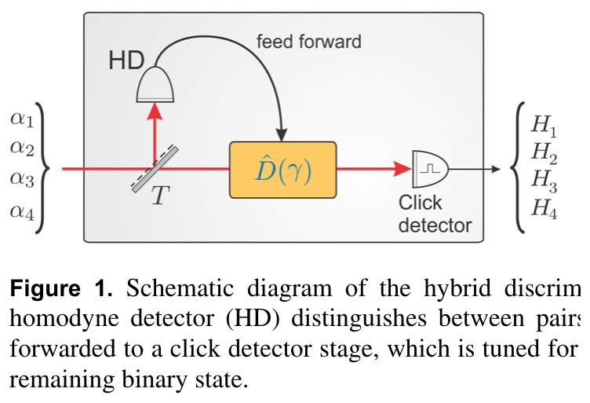
Nguồn: Müller et al., New J. Phys. 14, 083009 (2012), Fig. 1 (tr. 3)
- bước 1: homodyne theo cầu phương \(P\) loại một nửa số trạng thái
- bước 2: displacement có điều kiện rồi bộ đếm click chọn trong hai trạng thái còn lại
- \(t^2\) được tối ưu để cực tiểu lỗi
Tầng homodyne chia mặt phẳng pha làm hai nửa
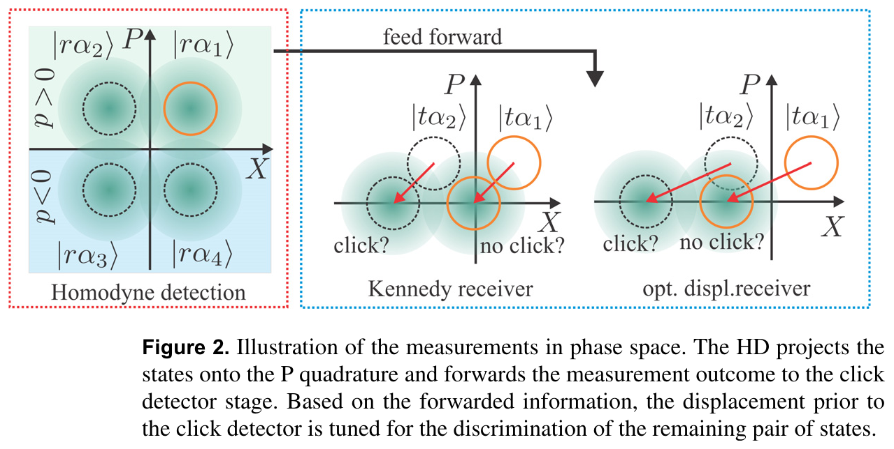
Nguồn: Müller et al., New J. Phys. 14, 083009 (2012), Fig. 2 (tr. 5)
Tầng Kennedy: displacement một ứng viên về chân không
| \(\bar n\) | \(t^2\) | HD-K/heterodyne |
|---|---|---|
| 1 | 0.593 | 1.055 |
| 1.8 | 0.544 | 0.953 |
| 3 | 0.495 | 0.803 |
| 5 | 0.451 | 0.596 |
Müller et al., New J. Phys. 14, 083009 (2012), Eq. (5)–(8), tr. 5–6. \(P^{\rm K1}_{\rm err}=0\): ứng viên dịch về chân không không gây click. Cột \(t^2\) và tỉ số: tính lại bằng số (m04_verify.py).
Máy thu displacement tối ưu (OD) cho QPSK
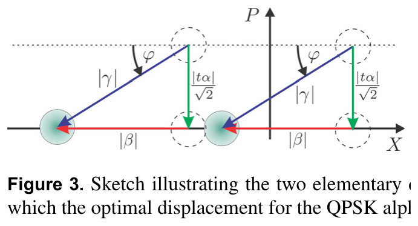
Nguồn: Müller et al., New J. Phys. 14, 083009 (2012), Fig. 3 (tr. 6)
Giới hạn yếu: \(|\gamma|^2\to0{,}5\) và \(\varphi\to0\). Giới hạn mạnh: \(|\gamma|^2\to|t\alpha|^2\) (như Kennedy) và \(\varphi\to\pi/4\). Với \(|\alpha|^2\approx1\), \(t^2\approx0{,}5\) (\(\varphi=\arctan\) ở Eq. (11)).
Tham số tối ưu theo công suất tín hiệu
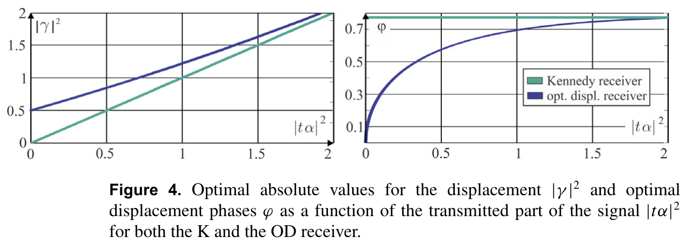
Nguồn: Müller et al., New J. Phys. 14, 083009 (2012), Fig. 4 (tr. 7)
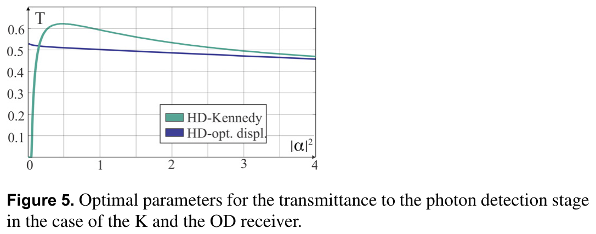
Nguồn: Müller et al., New J. Phys. 14, 083009 (2012), Fig. 5 (tr. 8)
Ví dụ số 1: Helstrom của QPSK tại một photon
- tỉ số\(0.2921/0.0924=3.16\)
Tính bằng m04_verify.py; tổng \(\sum\lambda_k=4=M\) là phép thử nhất quán (vết Gram matrix bằng \(M\)).
Ví dụ số 2: đọc khoảng cách SQL, thực nghiệm và Helstrom
Nguồn: Becerra et al., Nature Photon. 7, 147 (2013), Fig. 4 (tr. 150)
Tại \(\bar n=10\) khoảng cách tới Helstrom vẫn là sáu bậc độ lớn. Thực nghiệm chỉ chiếm được một phần nhỏ của khoảng cách đó.
\(10\log_{10}4=6.02\) dB.
Ví dụ số 3: tính tay lỗi của máy thu HD-K
Heterodyne tại \(\bar n=1\) cho \(0.2921\), nên HD-K kém hơn khoảng \(5.5\%\). Kết luận khớp ngưỡng Müller nêu: HD-K chỉ thắng khi \(|\alpha|^2\gtrsim1.6\).
| đại lượng | giá trị | nguồn |
|---|---|---|
| \(P^{\rm HD}_{\rm err}\) | 0.1835 | Eq. (4) |
| \(P^{\rm K}_{\rm err}\) | 0.1527 | Eq. (8) |
| HD-K | 0.3082 | Eq. (8) |
| heterodyne | 0.2921 | Becerra Eq. (2) |
Ví dụ số 4: máy thu HD-OD thắng heterodyne
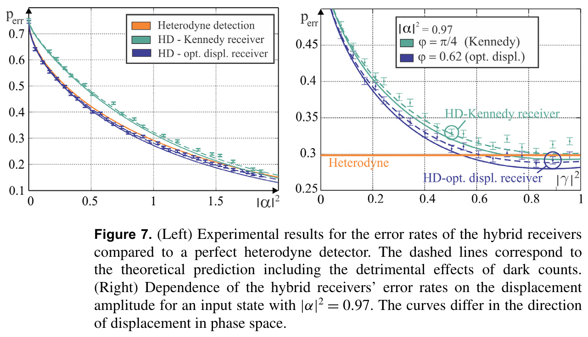
Nguồn: Müller et al., New J. Phys. 14, 083009 (2012), Fig. 7 (tr. 10)
So với heterodyne \(0.2921\) lỗi giảm \(6.9\%\) (tỉ số \(0.931\)); Kennedy nhị phân cho \(0.1828\) ở tầng sau.
Với \(\bar n=0.97\), \(t^2=0.53\) tính ra \(\varphi=0.58\); bài báo ghi \(\varphi=0.62\) ở điểm tối ưu thực nghiệm (Fig. 7 phải). Chúng tôi không truy được nguồn chênh lệch.
Ví dụ số 5: fidelity của repeater qutrit trước và sau purification
Bảng I của bài báo cho fidelity khởi đầu \(0.75\) và \(0.94393\) sau một vòng. Giá trị \(0.9439\) khớp bảng.
Bergmann & van Loock, arXiv:1708.09322 (2017), Eq. (26), (61)–(64), Bảng I (tr. 18).
Ví dụ số 6: tốc độ phân phối rối theo số đoạn
| \(n\) | \(Z_n\) | \(R_n\) (Hz) | khoảng cách |
|---|---|---|---|
| 1 | 1.966 | 10175 | 10 km |
| 2 | 2.520 | 7936 | 20 km |
| 3 | 3.142 | 6366 | 40 km |
Dùng \(P_0=0.6427\) (Eq. 47, \(d=3\)), \(c=2\times10^5\) km/s. \(Q_1=0.3026\) so với \(0.302641\) trong Bảng I.
Phạm vi hiệu lực của PGM và lỗi theo \(M\)
| \(M\) | Helstrom=PGM \(\bar n=2\) | heterodyne |
|---|---|---|
| 2 | 8.39e-5 | 2.28e-2 |
| 3 | 1.23e-3 | 7.38e-2 |
| 4 | 9.55e-3 | 0.1511 |
| 8 | 0.2230 | 0.4413 |
Với \(M=2\) bảng dùng heterodyne (không phải homodyne) để thấy cùng một thước đo; homodyne cho BPSK là \(2.34\times10^{-3}\).
Lỗi tương đối: Kennedy kém, optimized displacement tốt hơn heterodyne
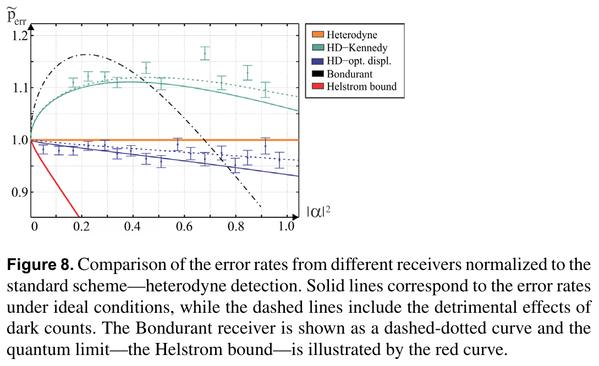
Nguồn: Müller et al., New J. Phys. 14, 083009 (2012), Fig. 8 (tr. 11)
| \(\bar n\) | HD-K | HD-OD | Helstrom |
|---|---|---|---|
| 1 | 1.055 | 0.931 | 0.316 |
| 1.8 | 0.953 | 0.868 | 0.086 |
| 5 | 0.596 | 0.586 | 9.0e-4 |
Hiệu suất phát hiện và so sánh vô điều kiện
| \(\bar n\) | \(P_{\rm SQL}\) | \(P_{\rm SQL}(0.723\bar n)\) |
|---|---|---|
| 6 | 0.01425 | 0.0462 |
| 10 | 1.565e-3 | 0.0108 |
| 14 | 1.75e-4 | 1.7e-3 |
- Mất mát và kém hiệu quả tương đương với giảm biên độ nên có thể quy về giai đoạn tạo trạng thái (Müller, tr. 10).
- Becerra so với SQL lý tưởng 100%: so sánh vô điều kiện, không phải so với heterodyne có cùng hiệu suất.
Số trong bảng: cột hai và ba tính từ Eq. (2); đường nét đứt "SQL (72%)" trên Fig. 4 là cùng ý.
Cửa sổ homodyne: đánh đổi giữa xác suất và fidelity
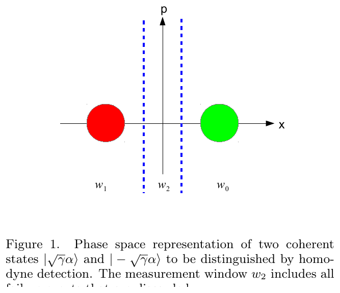
Nguồn: Bergmann & van Loock, arXiv:1708.09322 (2017), Fig. 1 (tr. 4)
\(\Delta=\Delta_0=\sqrt\gamma\alpha\) cho \(P_{\rm succ}=1\) nhưng fidelity thấp; \(\Delta\) nhỏ cho fidelity cao, xác suất thấp.
Mở rộng lên \(d\) lớn: USD thay cho homodyne
| \(d\) | \(L_0=5\) km | \(L_0=10\) km |
|---|---|---|
| 3 | 0.6427 | 0.5088 |
| 4 | 0.3203 | 0.2043 |
| 8 | 1.32e-3 | 3.39e-4 |
Với \(\alpha=1.2\). Khi \(d\) tăng, trạng thái chen chúc trên vòng tròn, homodyne không còn hướng nào đủ phân biệt (Bergmann, tr. 14), và \(P_D\) giảm rất nhanh.
Nguồn: Bergmann & van Loock, arXiv:1708.09322 (2017), Eq. (47), (76), tr. 5, 14.
Nối với kênh Gamma-Gamma: lỗi Helstrom trung bình
| \(\sigma_R^2\) | \(\alpha_{\rm GG}\) | \(\beta_{\rm GG}\) | chỉ số scintillation | \(\langle P^{\rm H}_{\rm err}\rangle\) |
|---|---|---|---|---|
| 0.1 | 21.59 | 19.82 | 0.099 | 0.0203 |
| 0.5 | 5.98 | 4.40 | 0.433 | 0.0587 |
| 1.0 | 4.39 | 2.56 | 0.706 | 0.0874 |
QPSK với \(\bar n=2\): lỗi không nhiễu loạn là \(0.00955\). Nhiễu loạn mạnh làm lỗi lớn gấp \(9\) lần. Đây là chỗ bài toán M trạng thái nối với kênh FSO của nhóm; bài báo trong module này chỉ xét kênh không nhiễu loạn.
Nguồn: Bergmann & van Loock, arXiv:1708.09322 (2017), Eq. (66)–(75), tr. 14–15.
Repeater lai: ánh sáng coherent làm "xe buýt" cho qudit
- \(S_z^{(d)}|k\rangle=\tfrac{2k-d+1}{2}|k\rangle\)toán tử spin tổng quát
- \(L_{\rm att}\approx22\) kmchiều dài suy hao ở bước sóng viễn thông
Mật độ ra sau mất mát: \(\rho_{\rm out}=\sum_{m}\tfrac{N_{v_m}(\sqrt{1-\gamma}\alpha)}{d^2}|T_m\rangle\langle T_m|\)
Độ rối negativity: \(\mathcal N(\rho)=\tfrac{\|\rho^{T_A}\|_1-1}{2}\)
Qutrit: rối light-matter vượt qubit lý tưởng đến khoảng 10 km
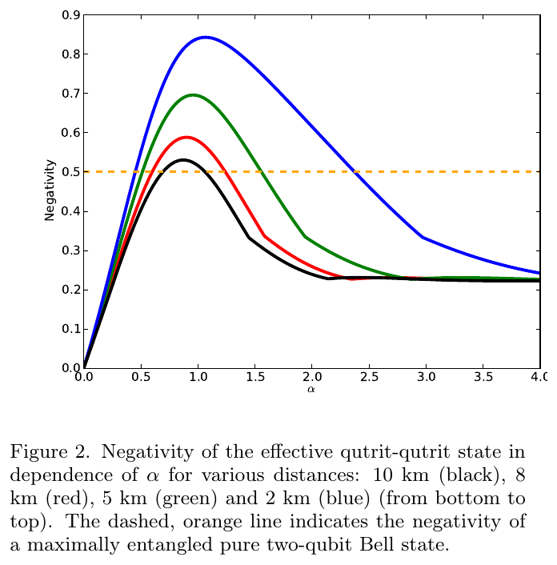
Nguồn: Bergmann & van Loock, arXiv:1708.09322 (2017), Fig. 2 (tr. 7)
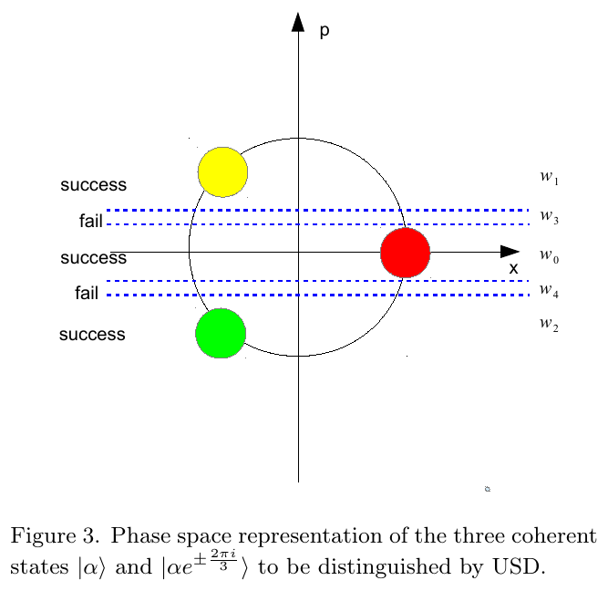
Nguồn: Bergmann & van Loock, arXiv:1708.09322 (2017), Fig. 3 (tr. 8)
Hiệu năng homodyne cho qutrit
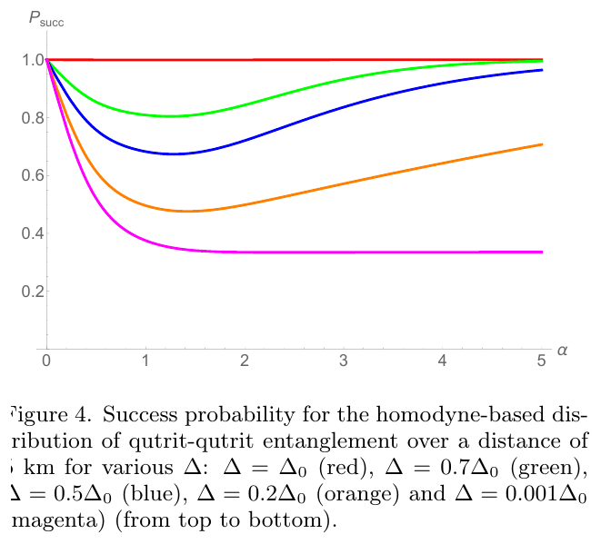
Nguồn: Bergmann & van Loock, arXiv:1708.09322 (2017), Fig. 4 (tr. 9)
Chọn \(\Delta=0.2\Delta_0\), \(\alpha\approx1\): \(F_{\rm av}\approx0.7\) với \(P_{\rm succ}\approx0.4\) (tr. 9). Khi \(\alpha\) lớn \(F_{\rm av}\to1/3\).
Case thật: so sánh USD và homodyne trên đường dài
| sơ đồ | \(L_0\) | vòng purification | F (1280 km) | tốc độ |
|---|---|---|---|---|
| USD | 10 km | 3 | 0.984 | 96 Hz |
| homodyne | 10 km | 3 | 0.957 | 69 Hz |
| USD | 20 km | 2 | 0.9921 | 5 Hz |
| homodyne | 20 km | — | dưới 0.5 | — |
Với \(L_0=20\) km chỉ USD đạt fidelity cao; homodyne rơi xuống dưới 0.5 (tr. 13).
Tổng hợp các máy thu cho QPSK
| máy thu | phép đo | lỗi QPSK tại \(\bar n=1\) | trạng thái |
|---|---|---|---|
| heterodyne (SQL) | dual homodyne | 0.2921 | lý thuyết |
| HD-K | homodyne + Kennedy | 0.3082 | Müller 2012 |
| HD-OD | homodyne + optimised displacement | 0.2721 | Müller 2012 |
| adaptive, N=10 | displacement + photon counting | xem Fig. 4 | Becerra 2013 |
| Helstrom | PGM (SRM) | 0.0924 | cận dưới |
Liên hệ với surrogate Helstrom của nhóm
- Bộ PSK qua kênh sạch: công thức đóng, vài phép tính trị riêng.
- Sau kênh Gamma-Gamma: \(\rho_k\) là hỗn hợp, phải dùng ma trận mật độ và \(\mathrm{eigvalsh}\) hoặc SDP; surrogate của nhóm thay bước này.
- Số liệu của nhóm: SDP 85.24 ms/mẫu, surrogate 0.118 ms/mẫu (CLAUDE.md, results_final).
Nội dung chi tiết
Bối cảnh lý thuyết và lịch sử
Với hai trạng thái, Helstrom (1967) đã cho lời giải đóng và Dolinar (1973) đề xuất máy thu hồi tiếp. Với \(M\gt2\) không có máy thu thực dụng đạt cận Helstrom; Bondurant (1993) và Takeoka-Sasaki (2008) đưa các máy thu gần tối ưu dùng displacement và photon counting. Becerra và cộng sự (2013) là thực nghiệm đầu tiên cho bốn trạng thái QPSK vượt giới hạn lượng tử chuẩn (SQL) của máy thu heterodyne. Müller và cộng sự (2012) đề xuất máy thu lai homodyne rồi photon counting. Bergmann và van Loock (2017) đưa ánh sáng coherent vào repeater cho qudit.
Nói nôm na, kỹ thuật, bảng, phép tính
Nôm na: bốn xung laser yếu khác nhau về pha 90 độ; phải đoán xung nào được gửi. Kỹ thuật: \(P_{\rm err}=1-\tfrac1{M^2}(\sum_k\sqrt{\lambda_k})^2\) với \(\lambda_k\) là trị riêng của Gram matrix vòng. Bảng: xem slide "Tổng hợp các máy thu cho QPSK". Phép tính: các ví dụ dưới.
\(\bar n=1\): Helstrom 0.09242, heterodyne (SQL) 0.2921. Tỉ số SQL/Helstrom \(=3.16\), tức Helstrom thấp hơn khoảng 3.2 lần.
BPSK: Helstrom 0.03506, homodyne 0.07865. QPSK: Helstrom 0.2617. Chở thêm 1 bit/ký hiệu làm lỗi tăng rõ rệt (minh hoạ cùng \(\bar n\)).
\(\bar n=1\): HD-K tối ưu \(t^2=0.593\) cho \(P_e=0.3082\); HD-OD \(t^2=0.503\) cho \(P_e=0.2721\); heterodyne 0.2921. Chỉ HD-OD thấp hơn heterodyne.
\(\bar n=10\): SQL 0.00156, Helstrom 1.03e-09. Chênh lệch nhiều bậc độ lớn; thực nghiệm Becerra đạt dưới SQL nhưng còn xa Helstrom.
Đoạn 5 km, \(\alpha=1{,}2\): \(F_0,F_1,F_2=0.7493, 0.09422, 0.1564\), tổng \(=1\). Chỉ số hiệu quả của qudit lớn hơn qubit lý tưởng ở khoảng cách này (Bergmann-van Loock, 2017).
Fig. 4 của Becerra vẽ \(P_{\rm err}\) theo \(\bar n\) với đường SQL và đường Helstrom. Tại \(\bar n=10\) SQL cho 0.00156; điểm đo nằm dưới đường SQL, trên đường Helstrom 1.03e-09.
Bẫy khi làm bài
- Nhầm \(\bar n=|\alpha|^2\) với \(|\alpha|\) khi tính độ chồng lấn.
- Dùng công thức hai trạng thái cho \(M=4\): hệ số khác nhau.
- Quên bình phương trong \(\tfrac1{M^2}(\sum\sqrt{\lambda_k})^2\).
- Lấy \(t^2\) của Kennedy thay cho \(t^2\) của OD: hai tối ưu khác nhau.
- Tin SRM tối ưu khi bộ trạng thái không đối xứng.
Phát hiện về thư mục nguồn
- Thư mục có ba PDF, đều đọc được: Becerra 2013 (6 trang), Müller 2012 (23 trang), Bergmann-van Loock 2017 (14 trang). Không có file lệch tên.
- Müller 2012 và Becerra 2013 chỉ xét kênh không nhiễu loạn; phần nối với Gamma-Gamma là tính bổ sung của chúng tôi.
Thực hành tương tác
Tự kiểm tra nhanh
Luyện tập sâu
Mở ngân hàng 46 câu trắc nghiệm và 5 bài viết code →
Tài liệu tham khảo
- F. E. Becerra et al., Nature Photon. 7, 147 (2013).
- C. R. Müller et al., New J. Phys. 14, 083009 (2012).
- M. Bergmann, P. van Loock, arXiv:1708.09322 (2017).
- C. W. Helstrom, Quantum detection and estimation theory, Academic Press, 1976.
- S. J. Dolinar, MIT RLE Tech. Rep. 111, 1973.